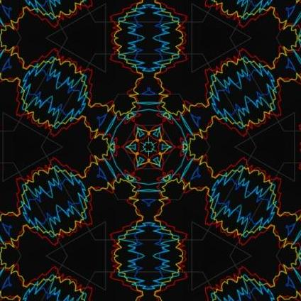

M4Y0U
Discoverer, hacker, dreamer, builder → [repeat]
htop-like network monitor — Python, cross-platform, 32★
machscope
zero-dependency macOS forensic CLI — processes, launchd, Mach services, trust scoring
procipher
deep process explorer — double entropy validation, ghost process detection, anomaly detection
EAEG
Enhanced Advanced Entropy Generator for Linux Kernels
metaformers
Metaformers AI stack — multi-agent debate and orchestration
Model Index
M4YOU Fleet Score — the leaderboard the fleet actually runs on